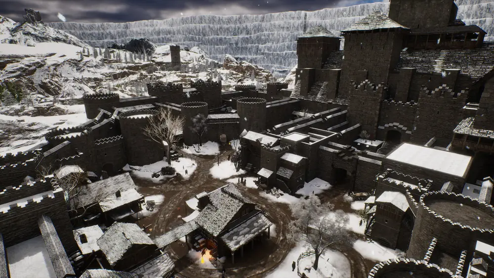
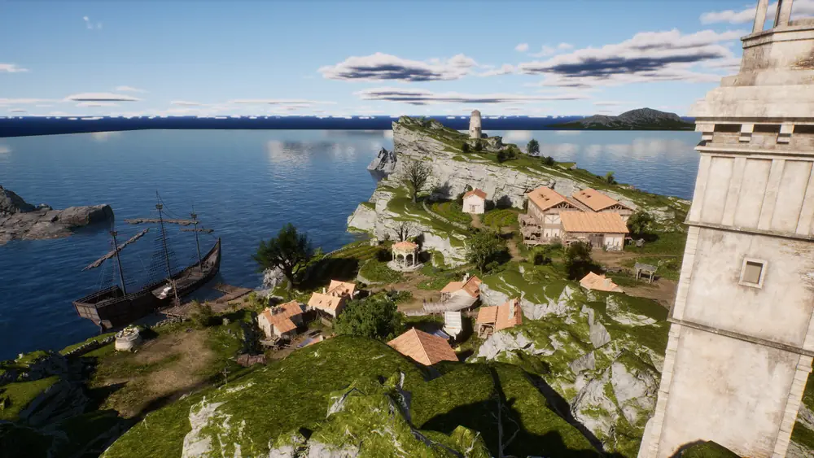
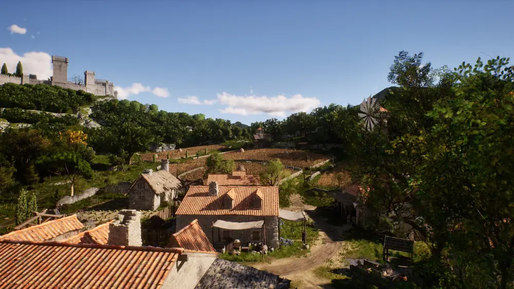
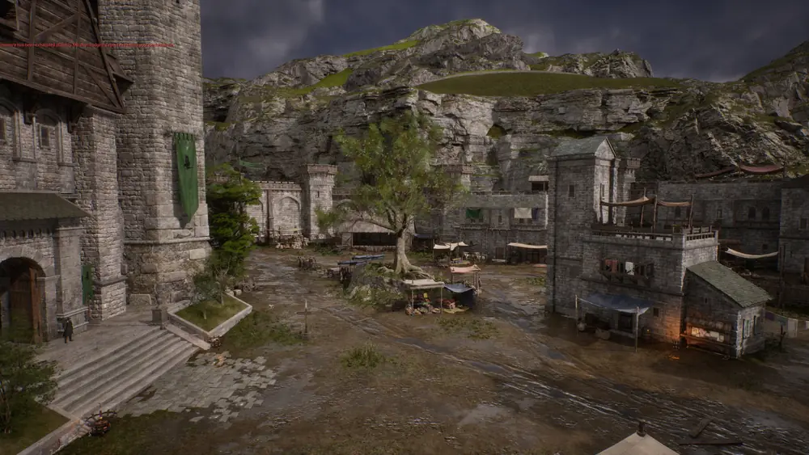
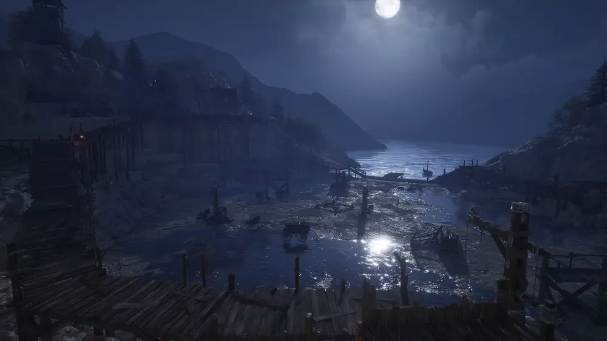
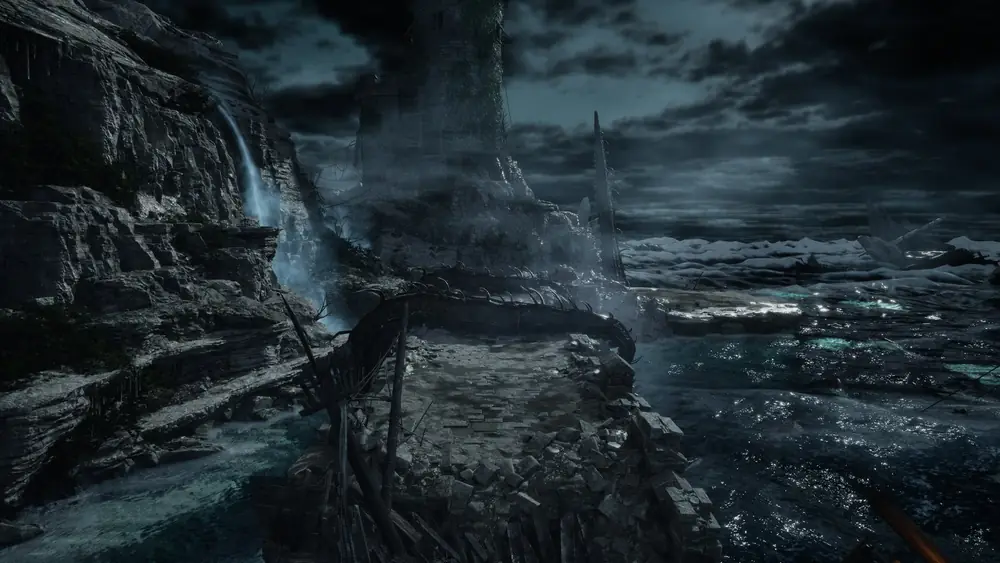
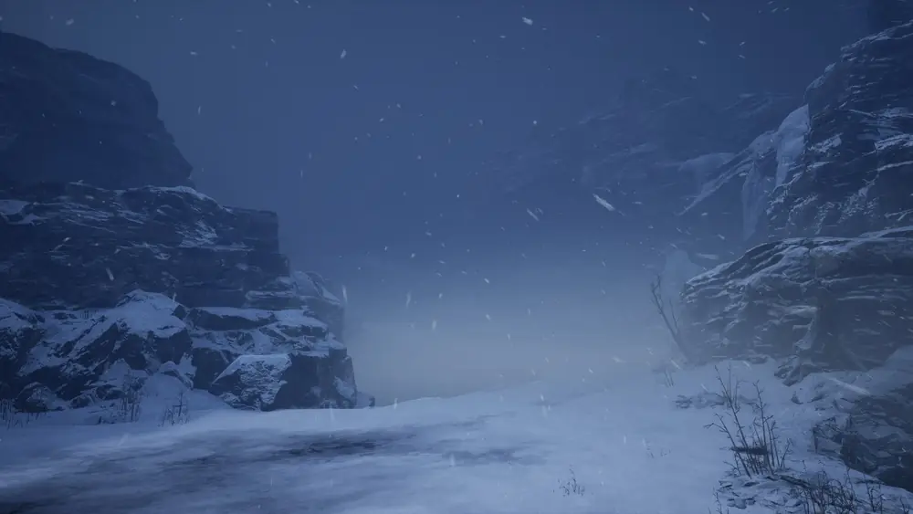
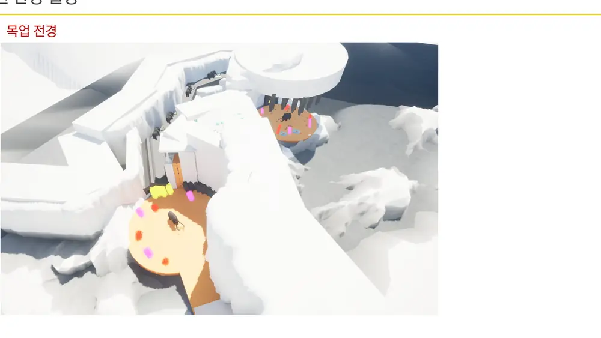
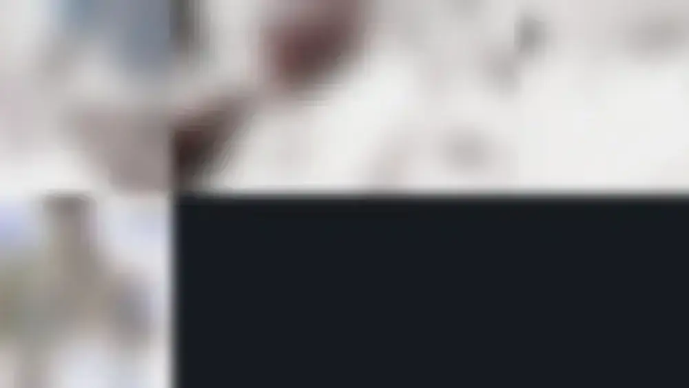
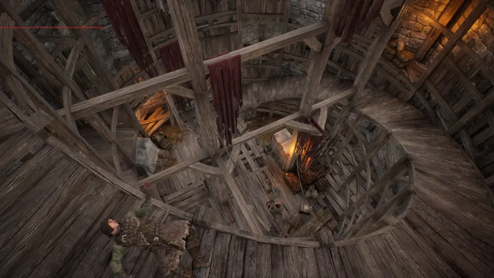

출시 마일스톤
Work · 담당 콘텐츠
필드 5곳 · 던전 5종
각 문서는 평면도 → 목업 → 완성 화면 순으로 실제 작업 과정을 그대로 실었습니다. 카드를 누르면 지역별 상세 문서로 들어갑니다.
필드 지역

출시이미지 12장→최북단 · 라스트허스 / 레난스레스트
게임의 첫 지역. 이동 규칙과 필드 콘텐츠 5종을 학습시키는 인트로 구간.

출시이미지 10장→올드타운 (리치)
담당 지역 중 최대 규모. A~D 구역으로 쪼개고 콘텐츠마다 식별 코드를 부여했습니다.

출시이미지 11장→하이가든
리치 남부의 정원 도시. 1차 / 최종으로 나눠 개정하며 성·마을과 필드를 확정했습니다.

출시이미지 14장→크로우즈네스트 (스톰랜드)
리뉴얼 결정으로 전 세트를 처음부터 다시 제작한 지역.
트윈스
챕터5 넥 권역의 신규 지역. 늪지·수상 가옥 등 무드가 달라 컨셉 단계를 별도로 세웠습니다.
던전

출시이미지 5장→그리핀 던전 (기억의 제단)
입사 3개월차에 받은 첫 던전, 단독 전담. 레벨 기획과 기능 기획을 함께 했습니다.

출시이미지 8장→크라켄 던전 (심연의 제단)
해저 동굴 던전. 페이즈 전환 동선과 낙사 지점을 설계했습니다.

출시이미지 3장→장벽너머 던전 (일부)
PvE 콘텐츠의 일부 구간 담당. 목업 9회 완주, 밧줄 특수 이동 이슈를 정리했습니다.

진행 중→맘모스 던전 (심연의 제단)
빙하 던전. 배경팀 전달용 레벨 기획서로 구역 분할·치수를 확정했습니다.

미공개→하렌홀 (PvEvP)
경쟁형 PvEvP 던전. 킥오프부터 참여해 구현·레벨 기획서와 목업 1차·2차를 제작.
Beyond Terrain
지형 밖에서 한 일
지형과 동선만이 아니라, 그 위에서 벌어질 일에 필요한 시스템과 작업 방식까지 만들었습니다.

Timeline
킹스로드에서의 4년
- 2022.08 – 12
입사 · 시스템 기획
레벨 기믹 트리거 시스템 등 레벨 기능 기획에 착수하고, 그리핀 던전을 단독 전담했습니다.
- 2023
지역 대량 생산
최북단 · 올드타운 · 하이가든 · 크로우즈네스트를 제작하고 필드 콘텐츠 5종을 유형화했습니다. 가젯 · 파괴형 프랍 시스템과 장벽너머 던전도 이 해에 맡았습니다.
- 2024
월드 품질 관리
길찾기 waypoint 정리, 네비메시 · 레벨기믹 결함 대응, 세력 은신처 개선.
- 2026.01 – 현재
상세기획 · AI 파이프라인
하렌홀 PvEvP 던전, 트윈스 및 챕터5 넥 지역, 맘모스 던전(진행 중), 이동 기믹 상세기획(v8 · v12), AI 목업 파이프라인 구축.